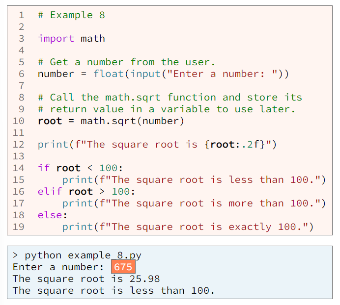

A function is a group of statements (computer commands) that together preform one task. Broadly speaking, there are four types of functions in Python which are:
A programmer can save a lot more time by using existing functions.
Python includes many built-in functions such as: input, int, float, str, len, range, abs, round, list, dict, open, print. These are called built-in functions because you don't have to import any module to use them. They are simply a built-in part of the Python language. You can read about built-in functions in the Built-in Functions section of the official Python online reference.
A programmer uses a function by calling it (also known as invoking it). To call (or invoke) a function means to write code that causes the computer to execute the code that is inside that function. Regardless of the type of function (built-in, standard, third-party, or user-defined), a function is called by writing its name followed by a set of parentheses ().
To call a function you must know the following three things:
These three pieces of information are normally available in online documentation. For example, from the online Python reference for the input function, we read this:
From this short description, we know the following:
A parameter is a piece of data that a function needs in order to complete its task. In the online reference for the input function, we see that the input function has one parameter named prompt.
An argument is the value that is passed through a parameter into a function, In other words, parameters are listed in a function's documentation, and arguments are listed in a call to a function.
To write code that calls a function, we normally do the following:
For example, the following code calls the built-in input function and passes the string "Please enter your name:" as the argument for the prompt parameter.

When a function has more than one parameter and a programmer writes code to call that function, the programmer nearly always writes the arguments in the same order as the parameters. Consider the description of the built-in round function:
Now consider this Python code that gets a number from a user, rounds that number to two digits after the decimal, and then prints the rounded number.
In the example above:
when calling a function or method, some arguments are optionalk, Again consider the description of the built-in round function:
From the description, we read that the second argument is optional. If the programmer doesn't type a second argument, the value in the number parameter will be rounded to an integer. The next code example is similar to the prvious example. The only difference is that at line 2 of the next example the programmer typed only one argument the round function. Because the programmer omitted the second argument, the round function will round the number in its first parameter to an integer, which is shown in the output below.
For some optional arguments, we must pass a named argument, which is an argument that is preceded by the name of its matching parameter. For example, here is an excerpt from the documentation for the print function:
Notice from the excerpt that the print function can take many objects that will be printed. Optionally, it can take parameters named sep, end, file, and flush that must be named when they are used. For example, this code calls the print function to print three words all separated by a vertical bar (|). Notice the named arguments sep and flush.
A Python module is a collection of related functions. The Python standard library includes many modules which have more functions, such as the math module-which includes the floor, ceil, and sqrt functions and the random module-which includes the randint, choice, and shuffle functions. Consider the description of the sqrt function that is in the standard math module:
From this short description, we know the following:
To use any code that is in a module, you must import the module into your program and precede the function name with the module name. For example, if you wish to call the "math.sqrt" function, you must first import the math module and the type "math." in front of sqrt like so:
In the example above, 71 is the argument that will be passed through the parameter x into the math.sqrt function. The math.sqrt function will compute the square root of 71 and return the computed value that will be stored in the variable r. You can read more about the standard modules in the official documentation for the Python Standard Library.
Python is an oject-oriented language and includes many classes and objects. A method is a function that belongs to a class or object. Calling a method in Python is so common and so easy that you should know how to do it. A method is a kind of function, so calling a method is similar to calling a function . The difference is that to call a method we must type the name of the object and a period (.) in front of the method name.
Consider the program in example 6 that gets a string of text from a user and prints the number of characters in the string and prints the string in all upper case characters.
Notice the code on line 8 calls the built-in le function and the code on line 12 calls the string upper method. Compare the function call in line 8 to the method call in line 12. To call the len function, we type the name of the function followed by a list of arguments inside parentheses. To call the upper method, we type the name of the object (text1) and a period, then the method name (upper), and then a list of arguments inside parentheses.
A method can receive arguments just like a function can. However, in example 6 at line 12, there are no arguments passed to the upper method, so the parentheses are empty. In order for the computer to call the upper method, a programmer must type the empty parentheses. In other words, if you write a line of code to call the upper method but don't type the empty parentheses like so:
The computer will not call the upper method. Instead the computer will assign a reference to the upper method to the "text2" variable. You don't want the computer to do this because assigning a function reference won't make sense to you until you study functional programming.
All the previous examples use the assignment operator (=) to store the value returned from a function in a variable. Example:

Notice in example 7, there are three statements that call the math.sqrt function, one at line 10 to print the square root, another at line 14 to check if the square root is less than 100, and yet another at line 16 to check if the square root is greater than 100. Every time the computer calls a function, the computer will execute the code that is inside the function. In example 7, because the argument is the same at lines 10, 14, and 16, the returned result will be the same in all three cases. So it would be faster to save the result in a variable and reuser the variable instead, as shown in example at lines 10, 12, 14, and 16.
